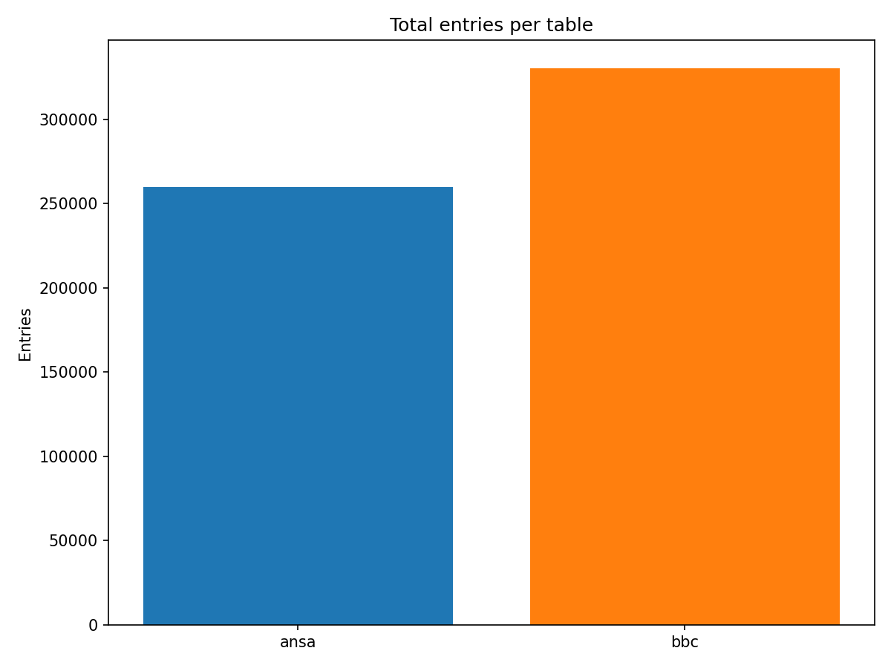
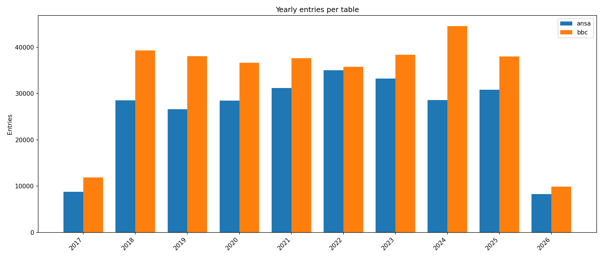
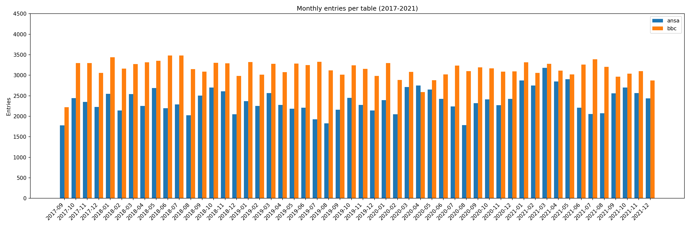
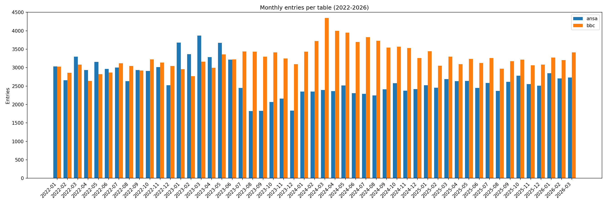

This page presents a comparative sample of two news datasets — ANSA (Italian) and BBC (English) — through aggregate metrics, visualizations, and downloadable monthly CSV slices. The data spans from September 2017 to March 2026.
The dataset is entirely homegrown, created and maintained since 2017 by Tommaso Barbato and archived with care.
Annales is a longitudinal bilingual corpus of news agency feeds, comprising approximately 600,000 structured items harvested from ANSA and BBC News RSS feeds from 2017 to the present day. Each record includes the item's title, editorial summary, publication date, and original URL. The corpus was built and is maintained solely by the author through an automated archival system that polls both feeds at regular intervals, ensuring continuous temporal coverage with no significant gaps. The system is still active and the corpus continues to grow.
The corpus's principal strengths lie in its uninterrupted temporal depth, its parallel coverage of two major wire services in two languages, and the consistency of its structure across the entire collection period. News agency RSS feeds are ephemeral by design: their contents rotate continuously and are not systematically archived, making this kind of longitudinal record difficult to reconstruct after the fact.
This page presents a stratified sample of the Annales corpus, illustrating its structure, coverage, and scale across the full collection period for both feeds.
A small sample of actual records from each dataset, showing the structure and content of the archived entries.
| id | title | summary | published | url | created_at |
|---|---|---|---|---|---|
| 4794 | De Rossi, niente Mondiale? Una macchia | Azzurro e playoff: 'giusto aver paura ma gambe non tremeranno' | 2017-11-08 13:38:04 UTC | http://www.ansa.it/sito/notizie/sport/calcio/2017/11/08/de-rossi-niente-mondiale-una-macchia_4c818e7b-7123-4364-aa09-0e32e3b7aa95.html | 2017-11-08 14:00:03 UTC |
| 5218 | Manovra: ipotesi bonus nonni, sconti su aiuti a nipoti | Detrazioni al 19% su spese mediche, scolastiche e sportive | 2017-11-13 19:03:24 UTC | http://www.ansa.it/sito/notizie/economia/2017/11/13/manovra-ipotesi-bonus-nonni-sconti-su-aiuti-a-nipoti-_f0cc04e4-d836-4360-ad14-73d0ad4c09ae.html | 2017-11-13 20:00:03 UTC |
| 5308 | Usa: sparatoria in una scuola, molti studenti feriti. Ucciso il killer | E' accaduto in California, sono morte sinora almeno tre persone | 2017-11-14 18:45:47 UTC | http://www.ansa.it/sito/notizie/mondo/2017/11/14/usa-sparatoria-in-una-scuola-molti-studenti-feriti.-ucciso-il-killer_aa45a241-1e22-4db3-b241-4383a45701a9.html | 2017-11-14 19:00:03 UTC |
| 5673 | Franceschini: 'L'Art bonus ha superato i i 200 milioni di euro' | Dal ministro appello alle aziende: 'Usatelo nel Mezzogiorno' | 2017-11-19 14:38:50 UTC | http://www.ansa.it/sito/notizie/economia/2017/11/19/franceschini-lart-bonus-superi-i-200-milioni-di-euro_3b67d1f3-cb77-4576-9325-e40f6b10191c.html | 2017-11-19 15:00:04 UTC |
| 6090 | Biotestamento, Renzi: 'Ci sono numeri in Parlamento' | Segretario Pd sul treno per tappe in Toscana | 2017-11-24 17:09:05 UTC | http://www.ansa.it/sito/notizie/politica/2017/11/24/renzi-dilemma-di-maio-cav-e-panzana_733adc3a-2e82-4619-a530-36625af34e16.html | 2017-11-24 18:00:04 UTC |
| id | title | summary | published | url | created_at |
|---|---|---|---|---|---|
| 170467 | Russia-Ukraine war: Foreign fighters go to join defence | Nearly 20,000 international volunteers have signed up to fight alongside Ukrainian forces, officials say. | 2022-03-11 00:02:52 UTC | https://www.bbc.co.uk/news/world-europe-60696603?at_medium=RSS&at_campaign=KARANGA | 2022-03-11 03:00:08 UTC |
| 170550 | France keep Six Nations Grand Slam dream alive | France keep alive their dreams of a first Grand Slam and Six Nations title since 2010 with a tense 13-9 victory over Wales. | 2022-03-11 21:56:48 UTC | https://www.bbc.co.uk/sport/rugby-union/60712709?at_medium=RSS&at_campaign=KARANGA | 2022-03-11 23:00:07 UTC |
| 170921 | Fears Russia will not be able to pay its debts mount | The country may be about to default on its debts as Western sanctions over Ukraine bite. | 2022-03-15 16:31:34 UTC | https://www.bbc.co.uk/news/business-60750642?at_medium=RSS&at_campaign=KARANGA | 2022-03-15 18:00:08 UTC |
| 172162 | Noel Clarke: Police not investigating sexual harassment claims | The Met Police say there is not enough evidence for a criminal investigation. | 2022-03-28 10:07:41 UTC | https://www.bbc.co.uk/news/newsbeat-60900404?at_medium=RSS&at_campaign=KARANGA | 2022-03-28 12:00:08 UTC |
| 172348 | Sophie Ecclestone: The making of England's world top-ranked bowler | From Cheshire cricket to a World Cup semi-final, it's been quite the journey for England's Sophie Ecclestone. | 2022-03-30 05:20:59 UTC | https://www.bbc.co.uk/sport/cricket/60904260?at_medium=RSS&at_campaign=KARANGA | 2022-03-30 06:00:08 UTC |
Total records collected for each source across the full time span.
| Year | ANSA | BBC | Combined |
|---|---|---|---|
| 2017 | 8,801 | 11,873 | 20,674 |
| 2018 | 28,553 | 39,336 | 67,889 |
| 2019 | 26,627 | 38,075 | 64,702 |
| 2020 | 28,448 | 36,652 | 65,100 |
| 2021 | 31,170 | 37,632 | 68,802 |
| 2022 | 35,056 | 35,804 | 70,860 |
| 2023 | 33,255 | 38,397 | 71,652 |
| 2024 | 28,605 | 44,614 | 73,219 |
| 2025 | 30,819 | 38,018 | 68,837 |
| 2026 | 8,284 | 9,899 | 18,183 |
Pre-generated charts comparing record volumes across both datasets.




Selected monthly extracts from each dataset, provided for inspection and qualitative exploration. Each file contains the records collected during that month.